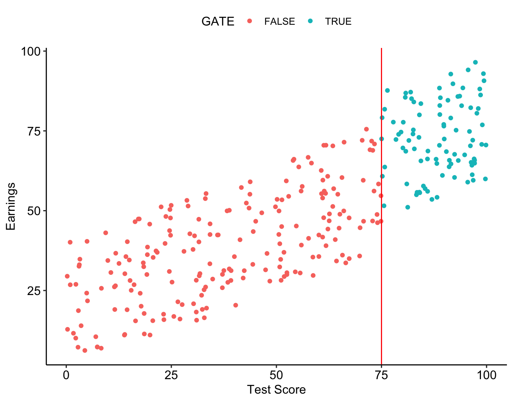
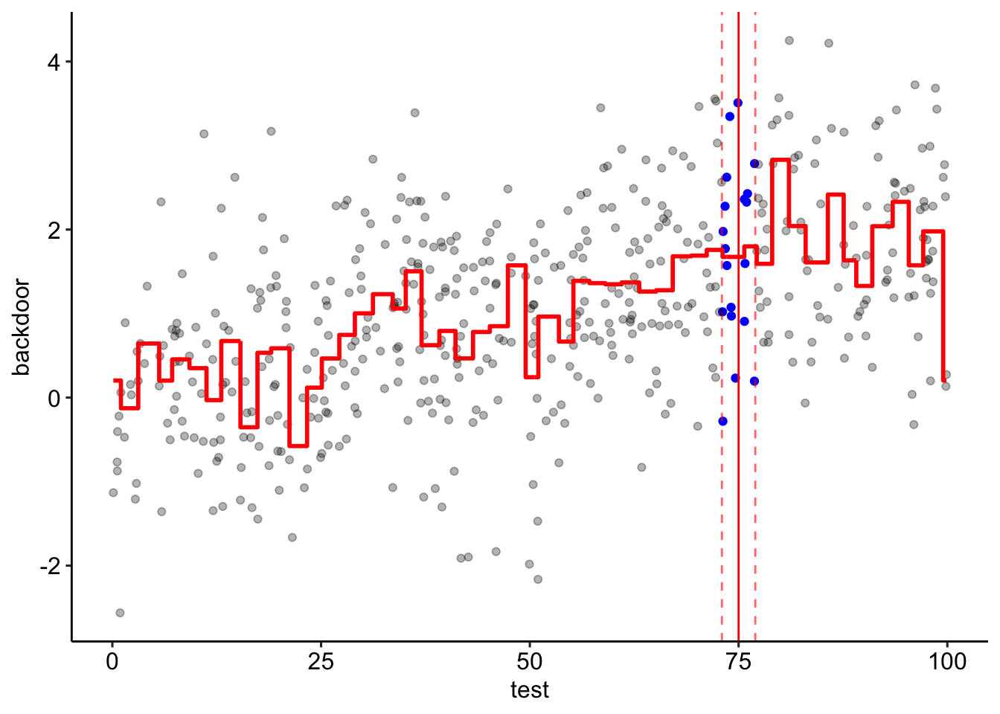

Recap
- We’ve covered several methods for isolating causal effects!
- Controlling for variables to close back doors (explain X and Y with
the control, remove what’s explained)
- Matching on variables to close back doors (find treated and
non-treated observations with identical values of controls)
- Using a control group to control for time (before/after difference
for treated and untreated, then difference them)
Today
- We’ve got TWO MORE METHODs to go deep on!
- First, we’ll be covering instrumental variables
- The basic idea is that we have some variable - the instrumental
variable - that causes
X but has no other open back
doors!
- Second, we’ll cover regression discontinuity designs
- Here the basic idea is to compare groups close to a discontinuity in
a running variable (e.g. test score) that affects treatment
assignment
Natural Experiments
- This calls back to our idea of trying to mimic an experiment without
having an experiment. In fact, let’s think about an actual randomized
experiment.
- We have some random assignment
R that determines your
X. So even though we have back doors between X
and Y, we can identify X -> Y
Natural Experiments
- The idea of instrumental variables is this:
- What if we can find a variable that can take the place of R in the
diagram despite not actually being something we randomized in an
experiment?
- If we can do that, we’ve clearly got a “natural experiment”
- When we find a variable that can do that, we call it an “instrument”
or “instrumental variable”
- Let’s call it
Z
Instrumental Variable
So, for Z take the place of R in the
diagram, what do we need?
Z must be related to X (typically
Z -> X but not always)- There must be no open paths from
Z to
Y except for ones that go through
X
In other words “Z is related to X, and all
the effect of Z on Y goes THROUGH
X”
- This implies no backdoors between
Z and Y
(unconfounded instrument)
- and no alternative frontdoors (exclusion restriction)
Instrumental Variable
- This doesn’t relieve us of the duty of identifying a causal effect
by closing back doors
- But it moves that duty from the endogenous variable to the
instrument, which potentially is easier to identify
- (and then adds on the additional requirement that there are also no
open front doors from \(Z\) to
\(Y\) except through \(X\) )
Instrumental Variable
How?
- Explain
X with Z, and keep only what
is explained, X'
- Explain
Y with Z, and keep only what
is explained, Y'
- [If
Z is logical/binary] Divide the difference in
Y' between Z values by the difference in
X' between Z values
- [If
Z is not logical/binary] Get the correlation
between X' and Y'
Estimation
- We will be doing this mostly by hand today (until the end part) but
most commonly this is estimated using two stage least
squares
- We basically just do what we described on the last slide:
- Use the instruments and controls to explain \(X\) in the first stage
- Use the controls and the predicted (explained) part of \(X\) in place of \(X\) in the second stage
- (do some standard error adjustments)
Many ways to do this in R, we’ll be doing 2SLS with
feols() from fixest
Instrumental Variables
- Notice that this whole process is like the opposite of
controlling for a variable
- We explain
X and Y with the variable, but
instead of tossing out what’s explained, we ONLY KEEP what’s
explained!
- Instead of saying “you’re on a back door, I want to close you” we
say “you have no back doors! I want my
X to be just like
you! I’m only keeping that part of X that’s explained by
you!”
- Since
Z has no back doors, the part of X
explained by Z has no back doors to the part of
Y explained by Z
Imperfect Assignment
- Let’s apply one of the common uses of instrumental variables, which
actually is when you have a randomized experiment
- In normal circumstances, if we have an experiment and assign people
with
R, we just compare Y across values of
R:
df <- tibble(R = sample(c(0,1),5000,replace=T)) %>%
mutate(X = R, Y = 5*X + rnorm(5000))
#The truth is a difference of 5
df %>% group_by(R) %>% summarize(Y=mean(Y))
## # A tibble: 2 × 2
## R Y
## <dbl> <dbl>
## 1 0 0.00398
## 2 1 5.01
Imperfect Assignment
- But what happens if you run a randomized experiment and assign
people with
R, but not everyone does what you say? Some
“treated” people don’t get the treatment, and some “untreated” people
might get it
- When this happens, we can’t just compare
Y across
R
- But
R is still a valid instrument!
Imperfect Assignment
In a setting with a binary instrument and a binary treatment, we can
distinguish between four types:
- Always takers: take the treatment irrespective of
the value of the instrument
- Compliers: take the treatment if R=1 and don’t take
the treatment if R=0
- Never takers: do not take the treatment
irrespective of the value of the instrument
- Defiers: take the treatment if R=0 and don’t take
the treatment if R=1
Imperfect Assignment
df <- tibble(R = sample(c(0,1),5000,replace=T)) %>%
#We tell them whether or not to get treated
mutate(X = R) %>%
#But some of them don't listen! 50% never take the treatment
mutate(X = ifelse(runif(5000) > .5,0,R)) %>%
mutate(Y = 5*X + rnorm(5000))
#The truth is a difference of 5
df %>% group_by(R) %>% summarize(Y=mean(Y))
## # A tibble: 2 × 2
## R Y
## <dbl> <dbl>
## 1 0 0.00870
## 2 1 2.61
Exercise: Change the code to create always takers and
defiers.
Imperfect Assignment
- So let’s do IV (instrumental variables);
R is the
IV.
iv <- df %>% group_by(R) %>% summarize(Y = mean(Y), X = mean(X))
iv
## # A tibble: 2 × 3
## R Y X
## <dbl> <dbl> <dbl>
## 1 0 0.00870 0
## 2 1 2.61 0.519
#Remember, since our instrument is binary, we want the difference in the means
(iv$Y[2] - iv$Y[1])/(iv$X[2]-iv$X[1])
## [1] 5.011207
Another Example
- Justifying that an IV has no back doors can be hard!
- Usually things aren’t as clean-cut as having actual
randomization
- And sometimes we may have to add controls in order to justify the
IV
- Think hard - are there really no other paths from
Z to
Y?
- This will often require detailed contextual knowledge of
the data generating process
Practice
- Does the price of cigarettes affect smoking? Get AER package and
data(CigarettesSW). Examine with help().
- Get JUST thecigarette taxes
cigtax from
taxs-tax
- Draw a causal diagram using
packs, price,
cigtax, and some back door W. What might
W be?
- Adjust
price and cigtax for inflation:
divide them by cpi
- Explain
price and packs with
cigtax using cut(,breaks=7) for
cigtax
- Get correlation between the explained parts and plot the explained
parts - does price reduce packs smoked?
Practice Answers
library(AER)
data(CigarettesSW)
CigarettesSW <- CigarettesSW %>%
mutate(cigtax = taxs-tax) %>%
mutate(price = price/cpi,
cigtax = cigtax/cpi) %>%
group_by(cut(cigtax,breaks=7)) %>%
summarize(priceexp = mean(price),
packsexp = mean(packs)) %>%
ungroup()
cor(CigarettesSW$priceexp,CigarettesSW$packsexp)
## [1] -0.9711096
Practice Answers Plot
plot(CigarettesSW$priceexp,CigarettesSW$packsexp)
Practice - Doing it with Regression!
- Common 2SLS estimators:
ivreg in AER,
iv_robust in estimatr, and
feols() in fixest. We’ll use the latter
since it’s fast easy to combine with fixed effects and all kinds of
error adjustments
m <- feols(Y ~ controls | X ~ Z, data = data)
m <- feols(Y ~ controls | fixed_effects | X ~ Z, data = data, se = 'hetero')
Practice - Doing it with Regression
- Reload the cigarette data and skip the summarize step
- Run our cigarette analysis first doing 2SLS by hand - use
lm() to run the first stage, then replace
price with predict(m) in the second stage
- Then use
feols() to do the same (use 1 to indicate no
controls). Coefficients should be the same but the standard errors will
be corrected in the feols() version!
- Show both results in
msummary()
Practice - Doing it with Regression
data(CigarettesSW)
CigarettesSW <- CigarettesSW %>%
mutate(cigtax = taxs-tax) %>%
mutate(price = price/cpi,
cigtax = cigtax/cpi)
first_stage <- lm(price~cigtax, data = CigarettesSW)
second_stage <- lm(packs ~ predict(first_stage), data = CigarettesSW)
package <- feols(packs ~ 1 | price ~ cigtax, data = CigarettesSW)
Practice - Doing it with Regression
msummary(list(second_stage, package), stars = TRUE, gof_omit = 'AIC|BIC|Lik|F|R2')
| (Intercept) |
219.576*** |
219.576*** |
|
(20.863) |
(16.989) |
| predict(first_stage) |
-1.019*** |
|
|
(0.191) |
|
| fit_price |
|
-1.019*** |
|
|
(0.156) |
| Num.Obs. |
96 |
96 |
| RMSE |
22.56 |
18.37 |
| Std.Errors |
|
IID |
- p < 0.1, * p < 0.05, ** p < 0.01, *** p < 0.001
|
Regression Discontinuity
- For regression discontinuity to work, we need the Treatment to be
assigned based on a cutoff of what’s called a “running
variable”
- For example, imagine we want to know the effects of being in a
Gifted and Talented (GATE) program on your adult earnings
- Being admitted to the program is based on your test score (running
variable)
- If you score above 75, you’re in the program. 75 or below, you’re
out!
Regression Discontinuity
- Notice that the y-axis here is In GATE, not the
outcome
## $x
## [1] "Test Score"
##
## $y
## [1] "In GATE"
##
## attr(,"class")
## [1] "labels"
Regression Discontinuity
- Here’s how it look when we look at the actual outcome

Regression Discontinuity
- Now, we have a bit of a problem!
- If we look at the relationship between treatment and going to
college, we’ll be picking up the fact that higher test scores make you
more likely to go to college anyway
Regression Discontinuity
- Except, that’s not actually what the diagram looks like! Test only
affects GATE to the extent that it makes you be above the 90
cutoff!
Regression Discontinuity
- What can we do with that information?
- Well, imagine that we looked at the area just around the
cutoff
- Say, the cutoff is 75, so we look at 73 to 77
- Within that group, it’s basically random whether you fall
on one side of the line or another
Regression Discontinuity
- Someone with a 75 is, on average, almost exactly the same as someone
with a 76, except that one got the treatment and the other didn’t!
- Heck, that tiny test score difference could be due to just having a
bad day before the test
- So we have two groups - the just-barely-missed-outs and the
just-barely-made-its, that are basically exactly the same except that
one happened to get treatment
- A perfect description of what we’re looking for in a control
group!
Regression Discontinuity
- So we look directly around the cutoff, and compare just below to
just above.
- This is our way of controlling for test score and closing the
GATE <- Above <- Test -> earn back door
- Why not just control for
Test in the normal way?
- Because if we really think that, right around the cutoff, it’s
random whether you’re on one side or the other, we don’t just close the
Test back door, we have effectively random assignment, like
an experiment!
- We’re not just closing the
Test back door, we’re
closing all back doors
In Practice
rdd.data <- tibble(test = runif(1000)*100) %>%
mutate(GATE = test >= 75) %>% mutate(earn = runif(1000)*40+10*GATE+test/2)
#Choose a "bandwidth" of how wide around the cutoff to look (arbitrary in our example)
#Bandwidth of 2 with a cutoff of 75 means we look from 75-2 to 75+2
bandwidth <- 2
#Just look within the bandwidth
rdd <- rdd.data %>% filter(abs(75-test) < bandwidth) %>%
#Create a variable indicating we're above the cutoff
mutate(above = test >= 75) %>%
#And compare our outcome just below the cutoff to just above
group_by(above) %>% summarize(earn = mean(earn))
rdd
#Our effect looks just about right (10 is the truth)
rdd$earn[2] - rdd$earn[1]
## # A tibble: 2 × 2
## above earn
## <lgl> <dbl>
## 1 FALSE 55.2
## 2 TRUE 66.0
## [1] 10.80055
Example: Corporate Social Responsibility
- Corporate Social Responsibility (CSR) is when corporations engage in
the kind of behavior that nonprofits usually do - community outreach,
charity, etc.
- Is this good for the corporation? Or would it make more sense to
just send the money they spend to actual nonprofits if they just want to
do good?
- This is a causal question
Example: Corporate Social Responsibility
- Convenient for our purposes, CSR policies are voted on by
shareholder boards
- If a board votes 49% in favor, it fails. 51% in favor? It
passes!
- Sounds like a regression discontinuity to me!
- “Close votes” is a common application of regression
discontinuity
Example: Corporate Social Responsibility
- So how do CSR policy announcements affect stock prices?
Example: Corporate Social Responsbility
- Caroline Flammer studies this topic
- Looking at the “abnormal return” (stock price return minus what’s
expected given the market) comparing CSR votes that just won vs. CSR
votes that just lost
- So what should we do?
- Focus just around the cutoff and compare abnormal returns just above
and just below.
Example: Corporate Social Responsibility

Flammer (2015) Management Science
Example: Corporate Social Responsibility
- Looks like stock returns increase by about .02, comparing CSRs that
just lost to just won!
- Seems like the market likes seeing those CSRs and values them
- And all those things that we might expect to correlate with both
stock price growth and CSRs - tech-savvy, youthful leadership, etc.,
we’ve closed those back doors too!
Balance
- Have we really closed those back doors?
- One thing that’s so great about RDD is that, since it’s basically
random whether you’re on one side of the cutoff or another, there
shouldn’t be other back doors
- It’s a form of within variation that’s so narrow it
basically closes everything
- We can check this by seeing if other variables differ on either side
of the line
- This is our way of testing our diagram - if our diagram is true,
then
above should have no relationship with any back door
variable after focusing around the cutoff
Balance
rdd.data <- tibble(test = runif(500)*100) %>%
mutate(backdoor=rnorm(500)+test/50) %>% mutate(GATE = test + backdoor >= 75) %>%
mutate(earn = runif(500)*40+10*GATE+5*backdoor+test/2)
bandwidth <- 2
rdd <- rdd.data %>% filter(abs(75-test) < bandwidth) %>%
#Create a variable indicating we're above the cutoff
mutate(above = test >= 75) %>%
#And compare our outcome just below the cutoff to just above
group_by(above) %>% summarize(backdoor = mean(backdoor))
rdd
## # A tibble: 2 × 2
## above backdoor
## <lgl> <dbl>
## 1 FALSE 1.67
## 2 TRUE 1.80
#Not a lot of difference!
rdd$backdoor[2] - rdd$backdoor[1]
## [1] 0.125357
Balance
- Notice there’s NO real difference here, indicating that we’ve closed
that back door

## $x
## [1] "Test Score"
##
## $y
## [1] "Backdoor Variable"
##
## attr(,"class")
## [1] "labels"
Summing Up
- We’ve covered five main methods of making comparisons as close as
possible
- Controlling and matching both take a set of
measured variables and adjust so you’re looking at variation within
those variables
- Difference-in-difference takes a chosen comparison
group and uses it to adjust for changes over time in your treated group
of interest
- Instrumental variables induce good
variation in the endogenous variables
- Regression discontinuity uses a cutoff in a running
variable to identify a treated and nontreated group that are basically
randomly assigned
Practice
- Does winning help your party stay in power 30 years
later?
- Install and load the
politicaldata package, and load
data(house_results)
- Create tibbles
hr76 and hr16 with only
1976 and 2016
- Create
repadv76 equal to rep vote minus
dem for 1976, and filter only to those with
!is.na(repadv75)
- Create
repwins16 equal to rep > dem for
2016, and filter !is.na(repwins16)
select() only
district,repadv76, repwins16, and
inner_join() the two data sets- Compare
repwins16 mean above and below
repadv76=0 with a bandwidth of .04
Practice Answers
# install the remotes package if it's not already
if (!requireNamespace("remotes", quietly = TRUE)) {
install.packages("remotes")
}
# install dev version of politicaldata from github
remotes::install_github("elliottmorris/politicaldata")
# load the politicaldata package
library(politicaldata)
data(house_results)
hr76 <- filter(house_results,year==1976) %>%
mutate(repadv76 = rep - dem) %>%
filter(!is.na(repadv76)) %>%
select(district,repadv76)
hr16 <- filter(house_results,year==2016) %>%
mutate(repwins16 = rep > dem) %>%
filter(!is.na(repwins16)) %>%
select(district,repwins16)
fulldata <- inner_join(hr76,hr16)
bandwidth <- .04
fulldata %>% filter(abs(repadv76-0)<=.04) %>%
mutate(above = repadv76 > 0) %>%
group_by(above) %>% summarize(repwins16=mean(repwins16))
## # A tibble: 2 × 2
## above repwins16
## <lgl> <dbl>
## 1 FALSE 0.737
## 2 TRUE 0.889